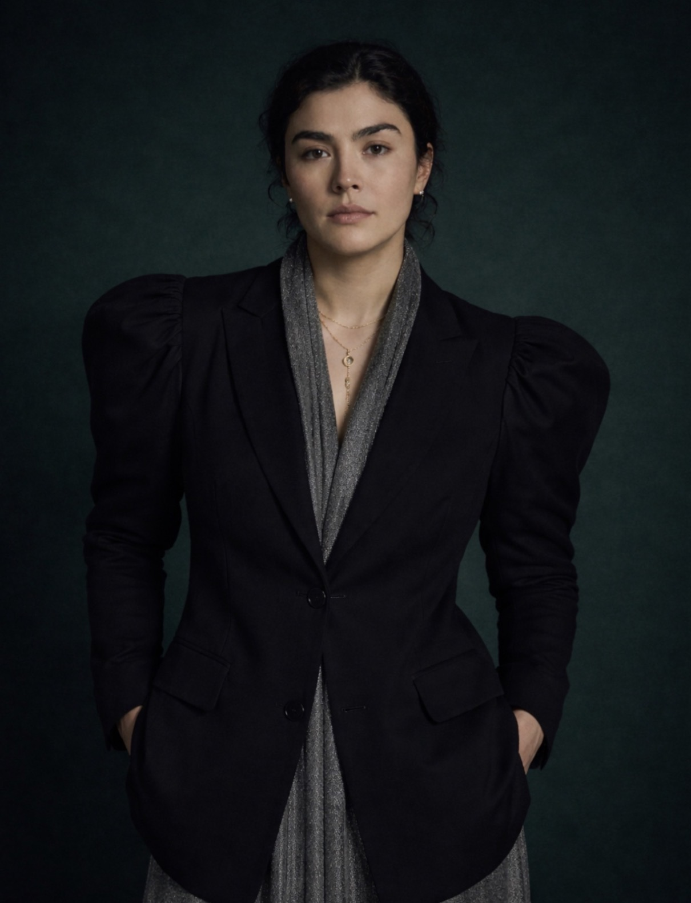

I
Model learning
Reinforcement learning, RLHF, self-play, distillation, representation learning, multimodal alignment, and post-training.
Work across multimodal foundation models, reinforcement learning, alignment, agents, world models, robotics, post-training, evaluation, and physical intelligence — connected by a recurring question: what must a system understand in order to act well in the world?

The work spans several layers that are often separated: learning and alignment at the model level, reasoning and action at the agent level, representation and planning at the world-model level, and the experimentation and engineering required to make these systems function outside a research prototype.
Reinforcement learning, RLHF, self-play, distillation, representation learning, multimodal alignment, and post-training.
Computer use, long-horizon reasoning, autonomous UI navigation, tool interaction, multi-agent learning, and VLA systems.
World models, 3D reasoning, robot learning, simulation, physical intelligence, evaluation, and sim-to-real.
The same question appears across the work: what does a model need to know in order to act well?
PhD research at UC Davis focuses on generalizable multimodal foundation models across vision, language, 3D, and action, with emphasis on world modeling, long-horizon reasoning, robot learning, multimodal alignment, retrieval, and reinforcement learning.
The operating pattern is end to end: define the problem, build the learning system, establish how improvement should be measured, and carry successful ideas into real environments.
Frame underdefined technical questions and connect them to measurable model behavior.
Work across multimodal modeling, RL, self-play, distillation, alignment, agents, and world models.
Turn broad capability claims into experiments, metrics, reward signals, and behavioral evidence.
Translate successful research into production systems and multidisciplinary execution.
Reviewer and research community service across frontier machine learning and AI.
HealthAlign-Agents selected for a Spotlight presentation.
Speaker at Ai4 2026 on The State of Computer Vision and at AI in Production on production-scale AI systems.
Recognition spanning robotics, machine learning, research competitions, and technical communities, including ICRA, ACM, AAAI/NeurIPS travel awards, and autonomous-systems challenges.
Work outside the lab includes entrepreneurship, technical communication, and applied AI systems: author of the AIComics series, Stanford technology entrepreneurship, prior ventures, and applied work spanning insurance and AI governance.
A career built around one technical transition: from representation to reasoning, and from reasoning to action.
Technology × Humanity × Freedom. A parallel creative practice treating design as another way to investigate autonomy, identity, systems, and human agency.
A parallel practice in writing, visual explanation, generative art, entrepreneurship, and scientific storytelling.
A visual journey through attention, transformers, and the ideas that reshaped modern AI.
Explore ↗A narrative explanation of diffusion models and the emergence of structured images from noise.
Explore ↗A story-driven introduction to agents learning through interaction, rewards, and sequential decisions.
Explore ↗A generative-art project exploring emotion, memory, symbolism, ambiguity, and cinematic visual narrative.
Explore ↗A platform focused on brain fitness and cognitive performance.
brainbuttonai.github.io/brainbutton ↗Public work across computer vision, multimodal AI, agents, world models, physical intelligence, and production-scale machine learning.